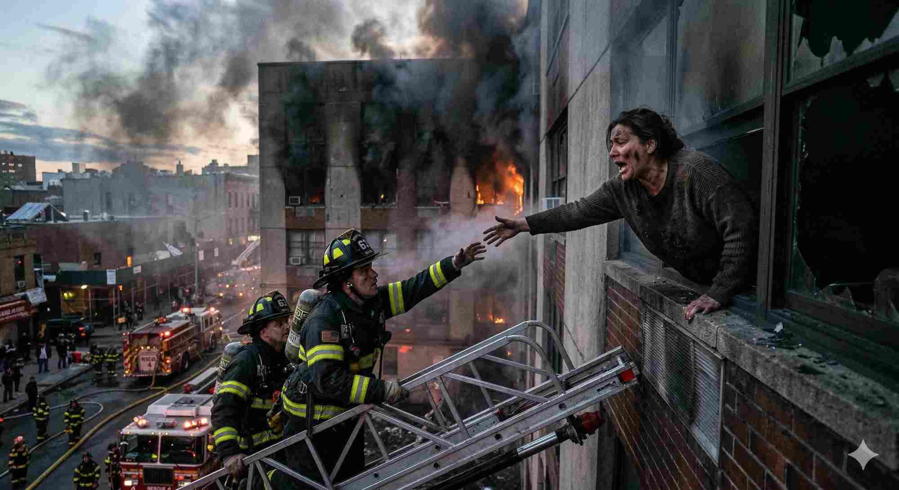
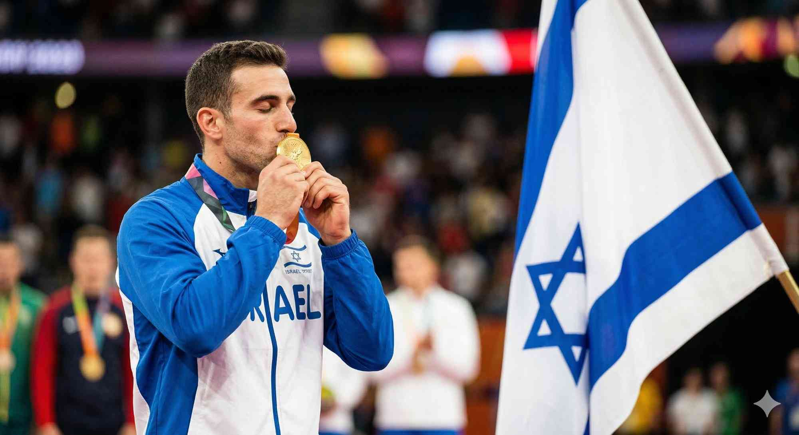
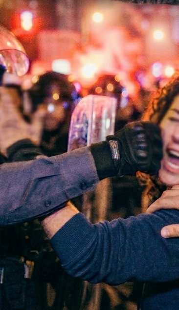
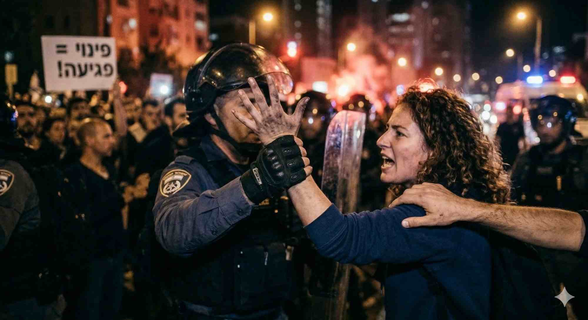

א
ניתוח תמונות חדשותיות
לפניכם 3 תמונות חדשותיות. לכל אחת — דרגו (1–5), בחרו את הקריטריונים שממולאים, והסבירו.
📷 תמונה 1

דירוג (1–5 כוכבים):
⭐⭐⭐⭐⭐
אילו קריטריונים ממולאים?
📷 תמונה 2

דירוג (1–5 כוכבים):
⭐⭐⭐⭐⭐
אילו קריטריונים ממולאים?
📷 תמונה 3 — מאתגרת!

דירוג (1–5 כוכבים):
⭐⭐⭐⭐⭐
אילו קריטריונים ממולאים?
ב
אזרח-צלם מול צלם מקצועי
בעידן הסמארטפון, עיתונים מקבלים תמונות מאזרחים ומצלמים מקצועיים. מהו ההבדל?
⚖️ פעילות 4 — אירוע, שני צלמים
האירוע: הפגנה גדולה בכיכר העיר, שוטר סוחב מפגין. לשניים יש תמונה:
- אזרח: מרחק, מטושטש, אבל תפס את הרגע בדיוק כשקרה
- צלם מקצועי: קומפוזיציה מדויקת, חדה, אבל מאוחר ב-30 שניות מהרגע המדויק
את מי תבחרו לפרסם?

ג
יצירה — תארו תמונה
אחד התרגילים הקשים בצילום עיתונאי — לדמיין ולתכנן את "הרגע המכריע" לפני שהוא קורה.
✍️ פעילות 5 — תארו את התמונה שהייתם מצלמים
הכותרת: "ראש הממשלה מגיע לבקר חיילים פצועים בבית חולים".
אתם הצלמים. יש לכם 20 דקות לצלם בבית החולים.
תארו את התמונה שהייתם מחפשים לצלם — ומדוע:
אתם הצלמים. יש לכם 20 דקות לצלם בבית החולים.
מלאו את כל השלבים ושלחו למורה